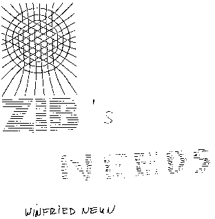
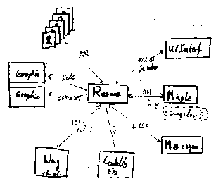
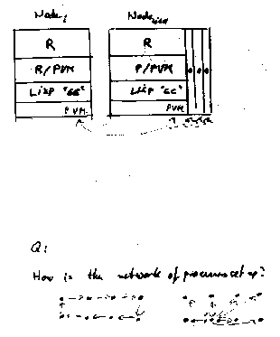
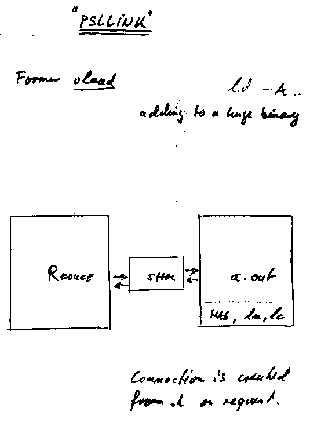

W. Neun: ZIB's needs
Slides presented at OpenMath Workshop 4 by Winfried Neun.

(full size, 8k)
(original, 310k)

(full size, 8k)
(original, 255k)

(full size, 7k)
(original, 270k)
This slide is probably wrong.
(full size, 7k)
(original, 250k)

(full size, 6k)
(original, 255k)
This page is part of the OpenMath Web archive,
and is no longer kept up to date.